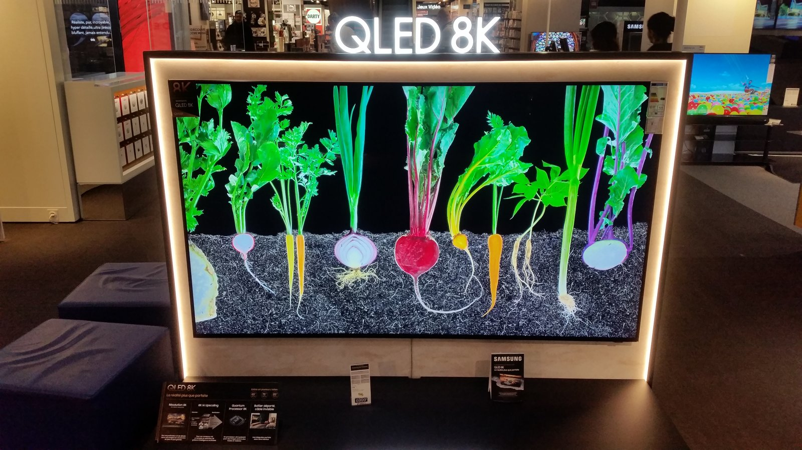

The Autopsy Report · Device #093
Samsung QLED TVs (2017–present)
The bestselling smart-TV line of the decade — and a wireless module whose public paperwork is a maze of near-identical model names. We trace what the FCC file actually pins down, and name what it doesn't.
What is this thing?
QLED is Samsung's flagship LCD TV line: quantum-dot color, local dimming, and Samsung's Tizen smart-TV platform, sold since 2017 in sizes from 43 inches up past 98. The representative hardware for this report is the WCT730M wireless module family — the Wi-Fi/Bluetooth module inside these sets (the Q60T-class models carry the WCT734M variant) — because that's the part with a public FCC record we can actually read. Samsung Class II change letter
Fair warning: this is our thinnest report of the batch. TVs are closed ecosystems with little public board documentation, and we won't invent chip identities to fill the silence.
Not yet on our bench
We don't own a QLED TV, so nothing here comes from our hands: no disassembly, no board photos, no measurements. Everything below is built from the FCC certification filings for the WCT730M family. When a unit lands on our bench, we'll verify the hardware firsthand and update this page.
A short history
- 2017Samsung launches the QLED brand, replacing the SUHD name on its top LCD line. Samsung FCC correspondence
- December 31, 2019The WCT730M wireless module receives its original FCC grant. Samsung Class II change letter
- 2019–2020Samsung files a Class II permissive change: the change is the deletion of a resistance-to-acceleration sensor, with no other modification. The basic model stays WCT730M; variants WCT733M and WCT734M are attested. Samsung Class II change letter Model attestation
- 2020–presentThe module family ships inside QLED sets like the Q60T class (QN55Q60TAFXZA carries module WCT734M, part BN59-01341A). FCC test report
The outside
A big glass slab on a stand or a wall mount — that's the outside of every QLED. The interesting part from our perspective is invisible: the wireless module buried on the main board that handles Wi-Fi, Bluetooth, and the voice-remote link. The photo below shows a Samsung QLED 8K set from the line — not the Q60T-class model whose module this report covers — used here as a line-level representative.

The board
No public teardown in our source set documents the Q60T-class main board at component level, and we have no unit of our own. What the records do tell us: the set's wireless functions live on the WCT730M-family module (variants WCT733M/WCT734M), a self-contained Wi-Fi/Bluetooth radio module certified separately from the TV itself. Model attestation
Under the microscope: the chips
What's on the board, what each part does, and how sure we are. Confirmed means a primary source (FCC exhibit or manufacturer document). Likely means well-corroborated public records.
| Chip | What it does | How we know | Dig deeper |
|---|---|---|---|
| No integrated-circuit identities for the WCT730M family or the Q60T-class main board are safely documented in the public records we reviewed. The module's schematics and parts list are not public, and no independent teardown in our source set names its chips. We'd rather show you an empty table than a fabricated one — this section waits for the bench. | |||
We are keeping the naming ambiguity visible on purpose: the FCC's original product is WCT730M; later records attest variants WCT733M and WCT734M; our research notes associate WCT734M (BN59-01341A) with the QN55Q60TAFXZA set. These are variant names, not separate devices — collapsing them would be a claim we can't defend. Model attestation
The government's file on this module
The wireless module carries FCC ID A3LWCT730M, grantee Samsung Electronics Co., Ltd. Samsung's own Class II change letter states the original grant was December 31, 2019, and describes the change plainly: deletion of the resistance-to-acceleration sensor, with no other modification. A later test report covers the module under Part 15C (spread-spectrum/DTS) and Part 15E (unlicensed national information infrastructure) with Bluetooth Low Energy, 802.11g, and 802.11a modes tested. Class II change letter FCC test report
Samsung's product-attestation filing names the basic model and its variants: WCT730M, WCT733M, WCT734M. Model attestation
Debug and service modes
Nothing about a service menu, debug header, or console is documented in the public records we reviewed for this module line, and we claim nothing. Our posture throughout: we listen, we don't knock. If a bench unit ever reveals a service interface, we'll document it read-only — never bypasses, never credential or key extraction.
What public records show
- The TV's wireless life is modularized: a certified Wi-Fi/Bluetooth module rather than radios scattered across the main board. Model attestation
- The module's tested radio modes include Bluetooth Low Energy and 2.4/5 GHz Wi-Fi (802.11g and 802.11a in the test report). FCC test report
- One documented hardware revision removed an acceleration sensor — a reminder that even "the same" TV changes across production runs. Class II change letter
What we haven't done
- No disassembly — we don't own a unit.
- No main-board component identification; the chip table above is intentionally empty.
- No service-menu, debug, or console investigation.
- No resolution of which production lots carry which module variant.
By the numbers
- Line: Samsung QLED (2017–present); module family WCT730M / WCT733M / WCT734M
- FCC ID: A3LWCT730M · Grantee: Samsung Electronics Co., Ltd.
- Original grant: December 31, 2019 (per Samsung's Class II change letter)
- Documented change: deletion of the resistance-to-acceleration sensor
- Tested radio modes: Bluetooth LE, 802.11g, 802.11a
Words to know
Every term this page uses, in plain English. No prior knowledge required.
- QLED
- Samsung's brand for its quantum-dot LCD TVs — an LCD panel with a quantum-dot film for richer color, not to be confused with OLED.
- Class II permissive change
- An FCC filing for modifying an already-certified device. The manufacturer declares what changed; the FCC allows it without a full re-test if the change doesn't affect the radio.
- Part 15C / Part 15E
- FCC rule sections for unlicensed radios: 15C covers spread-spectrum devices (Bluetooth, 2.4 GHz Wi-Fi); 15E covers 5 GHz unlicensed (U-NII) Wi-Fi.
- 802.11g / 802.11a
- Wi-Fi standards: 11g runs at 2.4 GHz, 11a at 5 GHz. Older modes still tested for compatibility.
- FCC
- The Federal Communications Commission — the U.S. agency that regulates anything that transmits radio. Every wireless gadget sold here has to pass its tests first.
- FCC ID
- The ID the FCC assigns to each approved wireless product. Punch it into fccid.io and the whole public filing comes up.
Sources & confidence
- FCC ID, grantee, original grant date, Class II change description, model variants: Samsung's own FCC filings. Confirmed (primary source).
- Tested radio modes (BLE, 802.11g, 802.11a): FCC test report. Confirmed (primary source).
- WCT734M (BN59-01341A) association with the QN55Q60TAFXZA set: research notes; treat as Likely pending bench verification.
- Line photo: Wikimedia Commons, CC BY-SA 4.0 — a Samsung QLED 8K set, shown as a line representative, not the Q60T-class model.
- Anything not listed here is unknown until the bench says otherwise. We'll say so, out loud, when that's the case.
Legal note. BareBoard is an educational project. This report is built entirely from public records — we own no Samsung QLED hardware and performed no testing. We don't publish, host, or distribute firmware, keys, passwords, or credentials. Product names and trademarks belong to their respective owners and appear here only to identify the hardware. If you believe anything here infringes your rights, contact us and we'll address it promptly.